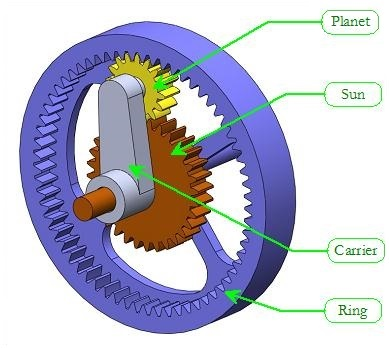

Introduction to Planetary Gearsets

Most commonly-encountered geartrains are relatively simple, having only one input and one output, and thus only one overall ratio. The planetary gearset is much more versatile, since it has two inputs and one output. As we will see, this versatility comes at a price: planetary gearsets are much more complicated to design and analyze than ordinary gearsets. They often behave in very counterintuitive ways, which makes their use all the more difficult (but interesting!). As with ordinary gearsets, however, a few simple rules can be used to determine the performance and efficiency of any planetary gearset.
Althought there are several Types of Planetary Gearsets, the most common type is shown in the figure, consisting of four major components: the sun, one or more planets, a ring gear, and a carrier (often called the arm or the spider). The major difference between planetary gearsets and ordinary gearsets is that the planets 'orbit' the sun; that is, their shafts are not fixed in space. It is this epicyclic motion that permits such interesting behavior.
Like all planetary gearsets, the gearset above has two inputs and one output. We may freely choose which shafts are the inputs and which is the output, as shown in the table below. In many cases, one of the inputs is fixed, so that there is a single gear ratio for the set. In other cases, such as in a hybrid powertrain, neither input is fixed, and the output depends upon both input speeds.
| Option | Inputs | Output |
|---|---|---|
| 1 | Sun and Carrier | Ring |
| 2 | Ring and Sun | Carrier |
| 3 | Ring and Carrier | Sun |
Planetary Animations
The animations shown below are designed to help you gain some insight into the behavior of planetary gearsets. In each case, one of the two inputs is fixed, and the other input makes one full rotation. The sun gear is twice the diameter of the planet gear, and the ring gear is twice the diameter of the sun gear. Even though the size ratios are pretty boring (1:2 and 1:4), the speed ratios will prove to be interesting, as you will see. Press the 'Play' button beneath each animation to observe the resulting motion.
Carrier Fixed Animations
In the two animations above the carrier is fixed, and no epicyclic motion results. Both gearsets behave like ordinary gearsets - they are not really planetary at all! In the animation on the left, the planet makes two rotations and the ring makes half a rotation, as would be expected in an ordinary gearset.
Sun Fixed Animations
The sun gear is fixed in the two animations above, while the carrier is free to move. The resulting motion is epicyclic, since the planet makes orbits around the sun. Now count the number of rotations made by each gear in the left-hand animation. You should observe that the planet makes three rotations and the ring makes 1.5 for every rotation of the carrier. Intuitively, you might have expected the speed ratios to be multiples of 2, following the size ratios, but here we have multiples of 3! Epicyclic motion makes for counterintuitive behavior.
Ring Fixed Animations
In this set of animations we hold the ring fixed. In the left-hand animation observe that the carrier makes 1/3 rotation and the planet makes a full rotation for each rotation of the sun.
Interactive Hybrid Powertrain Simulation
In each of the previous animations one of the inputs was held fixed, while the other was free to move. You might be curious to see what happens when two inputs are free to move, as is the case in a hybrid powertrain. The animation above provides a demonstration. Click "Play" to start the animation, and use the slider bars to control the speeds of the two inputs. Use the pushbuttons at the lower left to control which gear is the output. Note that the speed of the two inputs determines the output speed - you can't change the output speed with the slider! Play around with this animation until you feel comfortable with the behavior of the gearset.